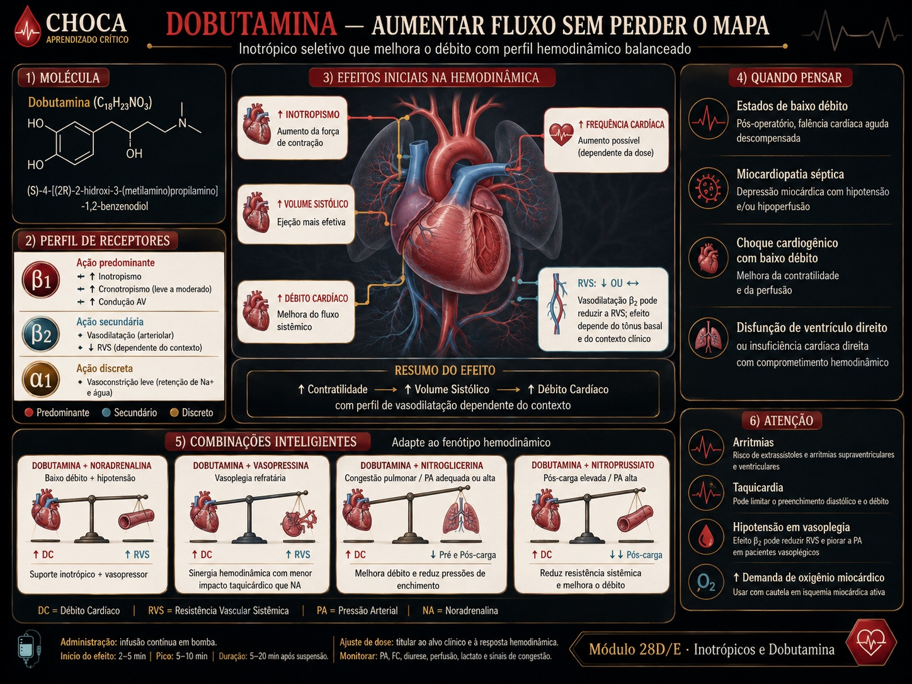

A dobutamina é β1>β2: sobe a contratilidade (e o débito) — mas o β2 baixa a RVS. Num leito vasoplégico, ela pode ganhar fluxo e perder pressão. É a droga que ensina por que débito e PAM não são a mesma coisa — e por que tantas vezes ela precisa do chão vascular da noradrenalina. β1 → DC β2 → RVS↓

Vá ao Instrumento: deslize a vasoplegia de base e veja a PAM e o débito de cada escolha.
| cenário | RVS | DC (L/min) | PAM (mmHg) |
|---|
Material educacional · não é suporte à decisão. O instrumento computa o mecanismo (DC, RVS, PAM) de perfis de receptores. Nunca exibe dose, titulação ou conduta para um paciente real.
→ Os coeficientes são didáticos; o que importa é a direção — dobutamina sobe
o débito e tende a baixar a RVS; a PAM resulta de DC × RVS. → A "intensidade da dose" é uma fração da faixa usual
(referência educacional, SAFETY.md §11), não uma prescrição; o peso é hipotético. → A escolha de associar
noradrenalina é apresentada como mecanismo (chão de RVS), não como ordem individualizada. → Confira o protocolo da sua instituição.